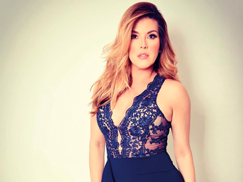
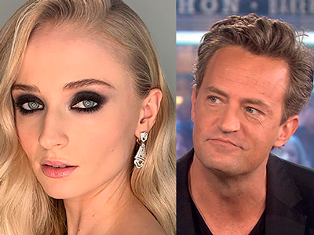

¡DE VUELTA A LA MÚSICA!
De vuelta al ruedo, renovada y con nuevo look, la actriz y cantante Anna Jaraba ya tiene listo su disco de vallenatos, el cual ha venido guardando desde hace dos años, pues su pequeño hijo Salvador ya tiene 3 años y ella se puede dedicar un poco más a su carrera. Recordemos que Anna dejó sus actividades musicales para estar pendiente de su maternidad, y en este mes de julio viene con un disco de clásicos y nuevas canciones que demuestran que las mujeres también hacen vallenato del bueno.
ARTISTA INTEGRAL
Después de terminar grabaciones en la novela El Bronx el actor Cristian Madrigal está dedicado a la música, comenzó a tomar clases de guitarra y técnica vocal, la idea es tener un campo más abierto en la actuación pues ahora los artistas integrales son los que más piden en los casting, también tiene pensado abrir su canal de YouTube con covers muy conocidos y por qué no hacer una alianza musical, para eso está en conversaciones con la actriz, cantante y coach vocal Ángela Mar.
¡EL TIGRILLO, MÁS FUERTE QUE NUNCA!
Después de sufrir un quebranto de salud en el mes de enero de 2019, debido al estrés y malos hábitos alimenticios, Jesús se encuentra muy recuperado gracias a las terapias y a su cambio de vida con la alimentación y el descanso. Hoy en día está grabando El Man es German y es un esposo y padre consagrado. El actor con apenas 22 años también ha dedicado su vida a enseñar artes escénicas a niños y jóvenes en ciudades de difícil acceso.
EL REGRESO DE “LA PILARICA”
Hace 20 años conocimos a la tierna “Pilarica” en la serie Tentaciones y al finalizar la serie perdimos su rastro, pero les contamos que la actriz Laura Rojas regresó a Colombia este año para continuar su carrera actoral; después de incursionar en la televisión española e italiana; decidió retornar y en estos momentos se encuentra grabando La India Catalina producción de Canal Caracol.
¿CUÁNTOS DESEOS TIENES?
Tomado de @franktakuma
El cantante colombiano Frank Takuma nos presenta su nuevo sencillo -8 Deseos- que busca conectar sentidos y sonidos llenos de energía con esencia tradicional del género rap, combinándolo con trap y con ritmos latinos, principalmente sonidos brasileños. Este nuevo tema es escrito por este artista y producido por Young Tiller y Red Little, grabada por Pyngwi en Art&co Studio, mezclada y masterizada por Blazz Music; por último, ya tiene videoclip oficial que estuvo a cargo de la productora capitalina Tone&Calle.
“No te pierdas este nuevo sonido que pondrá a vibrar tus sentidos”
¡BORRANDO RECUERDOS!
Tomado de @selenagomez
La famosa cantante Selena Gómez no la ha pasado bien estos últimos meses, tras someterse a terapia para superar problemas emocionales que padece; todo indica que su prioridad es recuperarse y retomar su carrera; según parece su primera acción recientemente fue borrar todos los recuerdos de Justin Bieber de su perfil, causando revuelo entre los internautas.

¡ACTRIZ VENEZOLANA REALIZA CANDENTES DECLARACIONES!
Tomado de @machadooficial
La ex miss universo Alicia Machado participó con mucho entusiasmo en el gran desfile que se realizó en West Hollywood, con motivo del mes del orgullo gay, y en una entrevista dijo: “Yo los amo, los adoro, siempre los defiendo. He tenido la oportunidad de estar en el Congreso de los Estados Unidos en varias ocasiones abogando por los derechos de todos nosotros, porque todos somos LGBTQ”.
Lo que sembró la duda fue esta declaración “Sí, yo he tenido varias novias, besos a todas” dijo sin agregar más detalles a este comentario que dejó desconcertados a muchos.

AMOR PLATÓNICO
Tomado de @sophiet y @mattylangfordperry
Sophie Turner confesa que fue una apasionada fan de la serie Friends y especialmente del personaje Chandler, interpretado por el actor Matthew Perry, con quien soñaba tener una cita. Sentía una especial debilidad por Perry, a quien llegó a conocer en persona cuando ella todavía ni se perfilaba como actriz: “Pasaba todos los días frente al teatro donde él estaba trabajando, pues quedaba camino a mi barrio, y lo veía siempre fumando fuera”. La actriz recién casada con Joe Jonas admite que llegó a comprar un encendedor para tener un pretexto y ofrecerle fuego para su cigarrillo, para así poder iniciar una conversación.